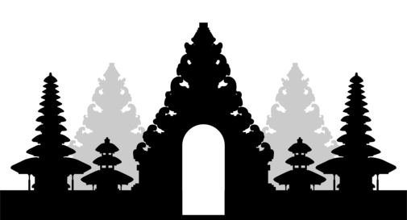
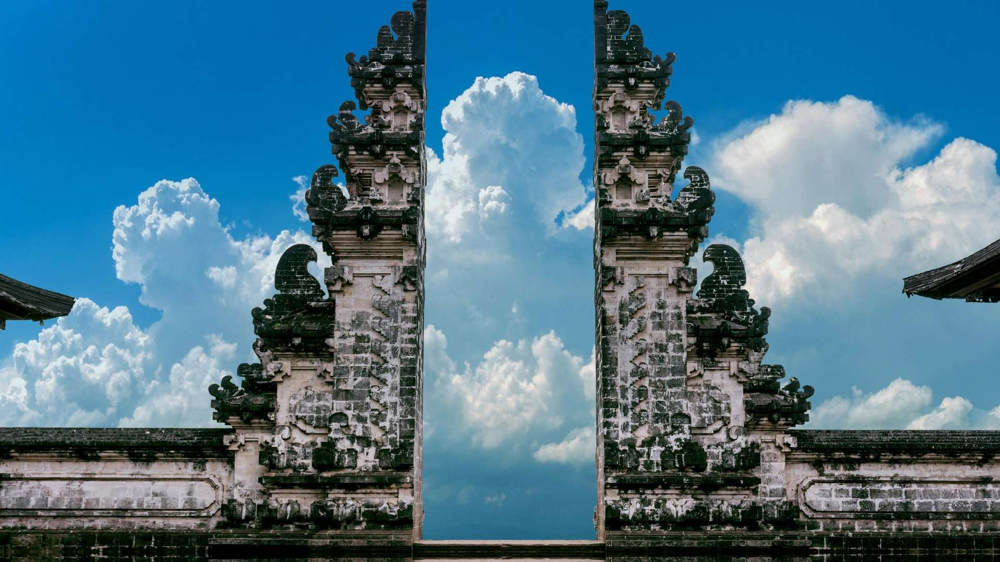
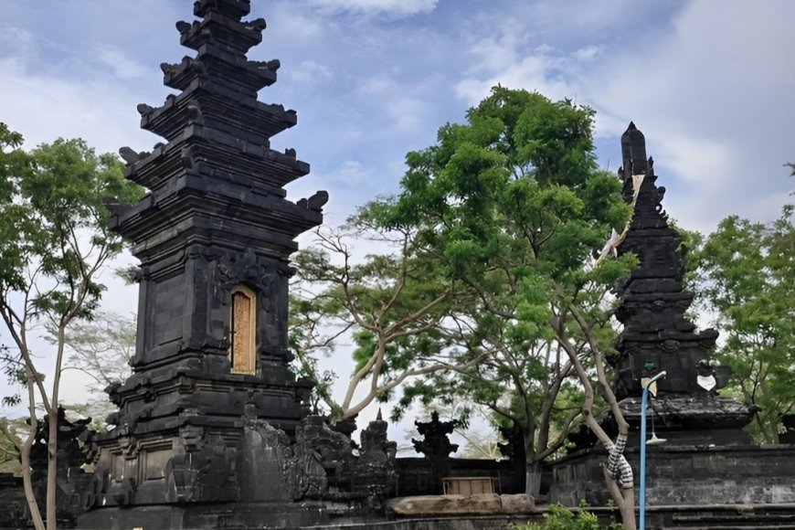
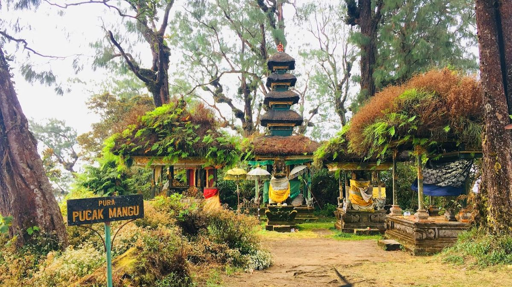

Destinasi Jiwa

Menapaki Jejak Suci Menuju Cahaya
Di balik gemerlapnya Bali, tersembunyi jalan sunyi yang menuntun jiwa kembali menyatu dengan alam dan Sang Pencipta. Bukan sekadar bangunan, pura-pura sakral ini adalah titik temu antara dunia fisik dan roh, tempat doa dan kesadaran bergetar dalam keheningan. Lima pura tersembunyi ini bukan tujuan wisata biasa, melainkan panggilan bagi mereka yang ingin menyucikan hati, bukan sekadar mengabadikan momen.
#ExploreTheUnseen

Pura Luhur Lempuyang
Gapura Menuju Langit
Tersembunyi di ketinggian Gunung Lempuyang, berdiri salah satu pura tertua di Bali. Dari kejauhan, Gapura Penataran Agung terlihat seperti pintu surga yang membelah langit. Tapi bagi umat Hindu Bali, tempat ini lebih dari sekadar lanskap—ini adalah tempat pembebasan dari ego dan ilusi duniawi.
Makna Sakral
Lempuyang adalah simbol “Pencerahan melalui Pendakian”. Untuk sampai ke puncaknya, dibutuhkan kesabaran melewati ratusan anak tangga, seolah mengajak kita meninggalkan beban dunia demi cahaya kesucian.
Lokasi Destinasi Jiwa
Desa Purwakerti, Karangasem ± 2,5 - 3 jam dari Denpasar

Pura Tirta Sudamala
Pancuran Suci Penjernih Jiwa
Di tepi lembah rimbun Desa Bebalang, mengalir mata air purba yang dipercaya sebagai anugerah penyucian dari alam semesta. Di sinilah berdiri Pura Tirta Sudamala, tempat orang datang untuk melukat (pembersihan spiritual) dari stres, gangguan energi, hingga luka batin yang dalam.
Makna Sakral
Setiap pancuran membawa fungsi tersendiri. Air dari Sudamala bukan hanya menyegarkan tubuh, tapi juga membuka jalan spiritual dan menyelaraskan aura.
Lokasi Destinasi Jiwa
Desa Bebalang, Bangli ± 1,5 jam dari Denpasar

Pura Dalem Pingit Sebatu
Pusat Pengelukatan Jiwa
Di desa Sebatu yang sejuk, mengalir pancuran-pancuran air jernih di Pura Dalem Pingit Sebatu. Tempat ini tidak untuk wisatawan biasa, melainkan untuk mereka yang benar-benar ingin menyucikan jiwa, memohon kesembuhan, dan melepaskan beban batin.
Makna Sakral
Prosesi melukat di sini dianggap paling kuat dan sakral di Bali. Di bawah air yang mengalir, manusia melepaskan masa lalu, kesalahan, dan energi negatif, untuk kembali menjadi pribadi baru.
Lokasi Destinasi Jiwa
Desa Sebatu, Gianyar ± 1 - 1,5 jam dari Ubud/Denpasar

Pura Segara Rupek
Penjaga Lautan Barat Bali
Tersembunyi di jantung hutan Bali Barat, Pura Segara Rupek berdiri sunyi di tepi tebing menghadap lautan. Di tempat sakral ini, warga memohon perlindungan dan keseimbangan alam—antara kekuatan darat dan ombak yang tak henti menghantam batas barat pulau. Pura ini menjadi benteng spiritual terakhir Bali sebelum laut menuju Jawa.
Makna Sakral
Segara Rupek melambangkan keheningan yang kuat. Di sinilah Mpu Siddhimantra dipercaya memisahkan Bali dan Jawa lewat semadi agung. Ia mengajarkan bahwa keteguhan sejati lahir dari diam dan hening, bukan dari amarah.
Lokasi Destinasi Jiwa
Desa Sumberklampok, Buleleng dalam kawasan Taman Nasional Bali Barat, 12 km dari jalan utama, hanya bisa ditempuh dengan niat dan kesungguhan.

Pura Puncak Mangu
Pertemuan Langit dan Danau
Di atas punggung Gunung Mangu, jauh dari keramaian, berdiri Pura Puncak Mangu — sebuah tempat di mana empat penjuru energi alam bertemu. Di sinilah peziarah berdiri di antara langit, danau, dan kabut pegunungan, merasakan getaran kesucian yang menggetarkan dada.
Makna Sakral
Dalam ajaran Hindu, gunung adalah tempat para dewa turun ke bumi. Pura ini menjadi simbol pencarian kedamaian batin melalui kesunyian dan keagungan alam.
Lokasi Destinasi Jiwa
Desa Pelaga, Gunung Mangu, Badung ± 2 - 2,5 jam dari Denpasar
Menemukan Tuhan di Tengah Kabut dan Sunyi
“Destinasi Jiwa” bukan soal tempat, tapi soal perjalanan ke dalam diri. Setiap pura ini adalah panggilan untuk berhenti sejenak dari hiruk-pikuk dunia, menunduk pada alam, dan membiarkan cahaya masuk dari dalam. Bali menyimpan lebih dari sekadar eksotisme. Ia menyimpan getaran spiritual yang hanya bisa dirasakan jika kamu membuka hatimu, dan menapaki jalur-jalur sunyi menuju jiwa.
#ExploreTheUnseen
#BaliUnseen